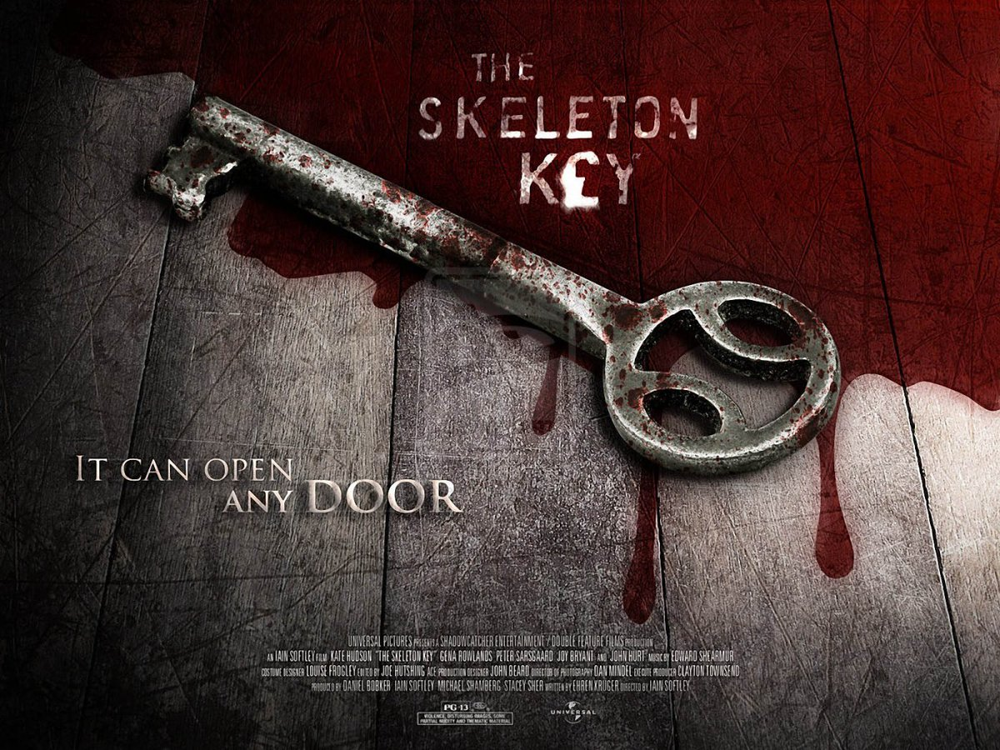
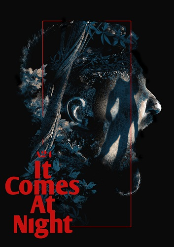
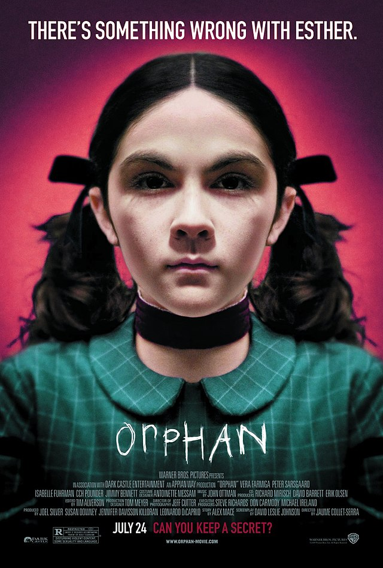
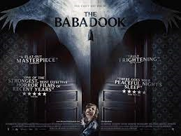
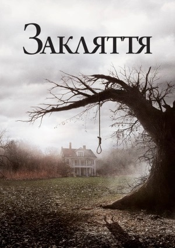

"Ключ від усіх дверей"
"Ключ від усіх дверей" - американський містичний фільм жахів режисера Іена Софтлі за сценарієм Ерена Крюгера. Це історія про молоду дівчину, яка влаштовується доглядальницею до паралізованого після інсульту старого. Його дружина дає їй ключ, який відкриває всі двері в 30-кімнатному будинку, але тільки одні двері засекречені.
Одного разу Каролайн потрапляє в таємну кімнату, з якої і почнуться всі жахи. Дружина старого розповідає дівчині історію про подружню пару чорношкірих слуг на ім'я Тато Джастіфай і Мама Сесіль, які практикували магію худу. Одного разу банкір влаштував банкет, під час якого він з гостями застав дітей на тому самому горищі за проведенням ритуалу. Тоді обурені гості вважали за потрібне лінчувати чаклунів.
Пізніше Керолайн дізнається, що перед смертю Тато Джастіфай працював над заклинанням, яке, продовжуючи життя одній людині, скорочує життя іншого. Вона починає вірити в дію магії худу, особливість якої в тому, що той, хто не вірить в чаклунство - невразливий для нього.
"Воно приходить вночі"
Світ пожирає невідома епідемія, але герой зумів знайти острівець безпеки для дружини і дитини - чоловік вивіз сім'ю подалі в ліс, де в самотньому будиночку сподівається перечекати безумство, яке обрушилося на цивілізацію.
Глава сімейства вводить жорсткі порядки і найсуворішу дисципліну, що вселяє страх в його домочадців, проте захищає від смертельних небезпек зовнішнього світу. Одного разу на порозі будинку з'являються нешкідливі, здавалося б, гості, іх безпека потрапляє під загрозу.
"Дитя темряви"
Подружня пара, яка зовсім недавно втратила свою дитину, удочеряє дев'ятирічну дівчинку, яка виявляється зовсім не такою милою і нешкідливою, як це могло здатися на перший погляд. Що ж такого таїться, здавалося б, в простій дівчинці - дивіться у фільмі.
"Бабадук"
Шість років тому Амелія в один день втратила чоловіка і народила сина. Семуелю йде вже сьомий рік, але йому скрізь ввижаються чудовиська. Одного разу перед сном хлопчик просить маму почитати йому знайдену книгу про жахливого монстра. З цього моменту його страхи отримують фізичне втілення в моторошному Бабадуку.
"Закляття"
Цей фільм заснований на реальних подіях. В основі сюжету лежить реальна історія сім'ї Перон, які стверджували, що жили в оточенні привидів, як добрих, так і злих. Духи населяли будинок на Род-Айленді, в якому вони проживали в сімдесятих роках XX століття. До слова, "Закляття" отримав премію "Сатурн" за найкращий фільм жахів.
